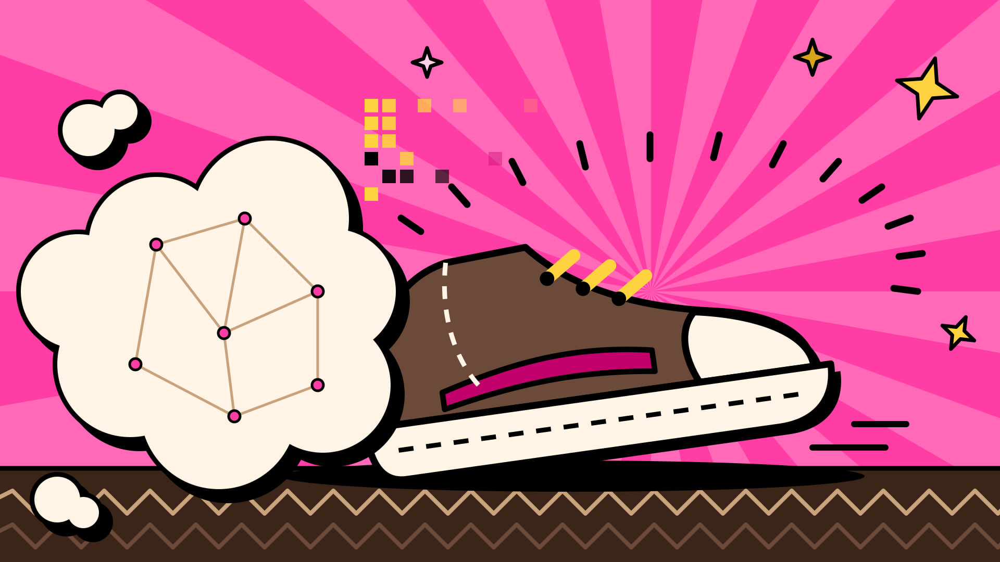

Spoor 1 · de motor
Kennis en autoriteit
Mijn reis publiceer ik als journal. Daaromheen komen how-to's, boeken en workshops. Dit is de belangrijkste motor: wat ik leer over wol en vilt, deel ik, zodat anderen er ook mee verder kunnen.

Mijn publieke reis · Boldwool-strategie
Dat is de kernbelofte van Boldwool. Hier leg ik uit waarom ik dit doe, langs welke drie sporen ik werk, en hoe ik dat met een klein team bots aanpak.
Stand: 28 september 2026
Mooie wol wordt weggegooid, en de wereld zit met een berg textielafval. Met textiel-upcycling en wolvilt wil ik bijdragen aan een oplossing.
Mijn koers: lokale wol krijgt weer waarde, via producten, ervaringen, samenwerking en gedeelde kennis van het proces. En die kennis is overdraagbaar, zodat ook andere lokale makers er een eigen productroute mee kunnen bouwen.
Eén motor, één bewijs, één uitnodiging.
Mijn reis publiceer ik als journal. Daaromheen komen how-to's, boeken en workshops. Dit is de belangrijkste motor: wat ik leer over wol en vilt, deel ik, zodat anderen er ook mee verder kunnen.
De artisan sneaker en de bodywarmer zijn mijn MVP's: eerste versies die laten zien wat het materiaal kan. Geen eindpunt, maar bewijs.
Ik zoek bedrijven die het wolvilt een stap verder brengen: als materiaalpartner, met een pilot, door samen te ontwikkelen of door op te schalen.
Werk je in schoenen, kleding, akoestiek, meubels of automotive en wil je verkennen wat wolvilt voor jouw product kan betekenen? Ik hoor graag van je. Neem contact op via de website van Boldwool.
Een klein team bots doet het onderzoek, legt vast wat er gebeurt en schrijft conceptteksten. Het persoonlijke contact doe ik zelf: mensen nodig ik zelf uit. Niets gaat de deur uit zonder mijn "stuur".